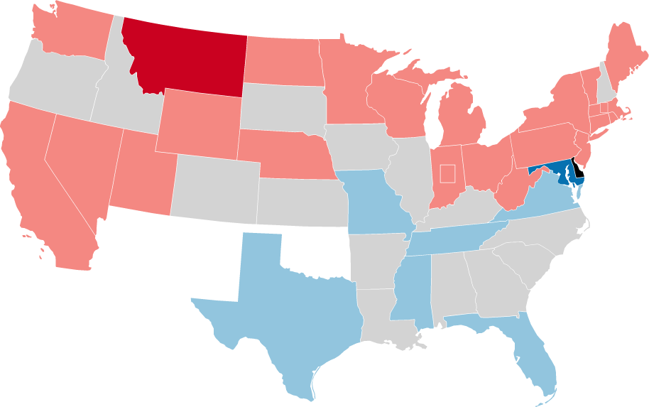

1904-1905 United States Senate Elections
| 1904-1905 United States Senate Elections | |
|---|---|
| Date | March 2nd, 1904 (first) May 10th, 1905 (last) |

|
William B. Allison Seats before — 57 Seats won — 21 Seats after — 56 Seats change — ↓1 |
|
|
Arthur P. Gorman Seats before — 33 Seats won — 6 Seats after — 33 Seats change — 0 |
|

Democratic gain Democratic hold
Republican gain Republican hold Legislature failed to elect |
|
| Elected Majority Party | Republican |
| Next Election | 1906-1907 Senate Elections |
The 1904–05 United States Senate elections were held on various dates in various states, coinciding with Charles Fairbanks' election and the 1904 House of Representatives elections. As these U.S. Senate elections were prior to the ratification of the [TODO:AMENDMENT_NUMBER] Amendment in [TODO:AMENDMENT_DATE], senators were chosen by state legislatures. Senators were elected over a wide range of time throughout 1904 and 1905, and a seat may have been filled months late or remained vacant due to legislative deadlock. In these elections, terms were up for the senators in Class 1.
Party share of seats remained roughly the same, when including vacancies and appointments, and the Republicans retained a significant majority over the Democrats.
Special elections were held in Indiana and Massachusetts, in the former due to the ascension of Charles Fairbanks to the Presidency and in the latter due to the death of longtime Senator George Hoar.
See Also
- 1904–05 United States presidential elections
- 1904 United States House of Representatives elections
- 1904 United States gubernatorial elections